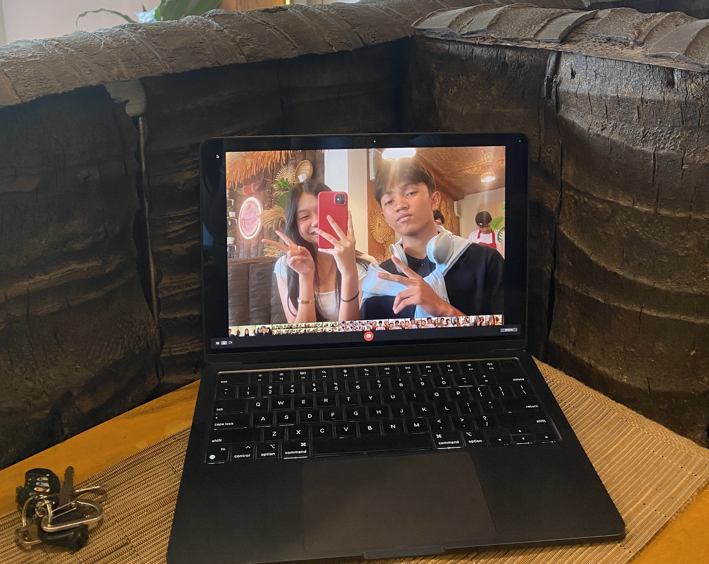
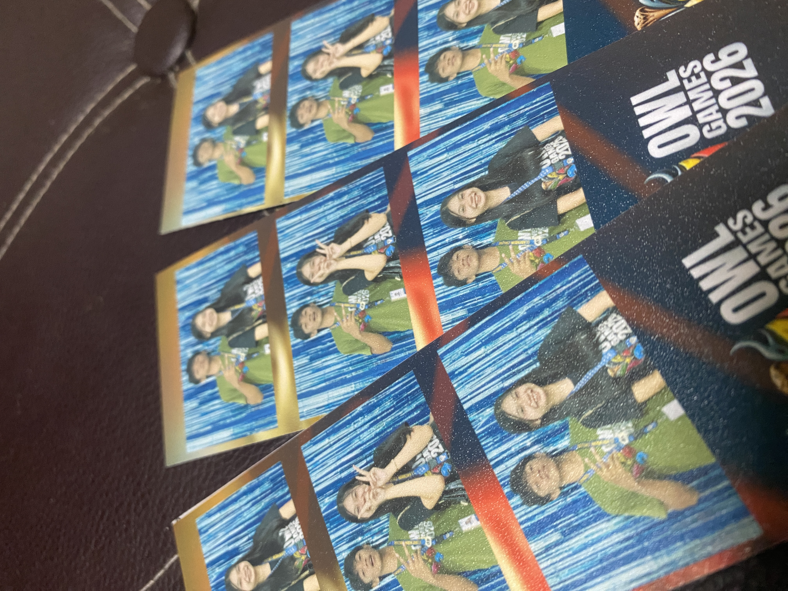
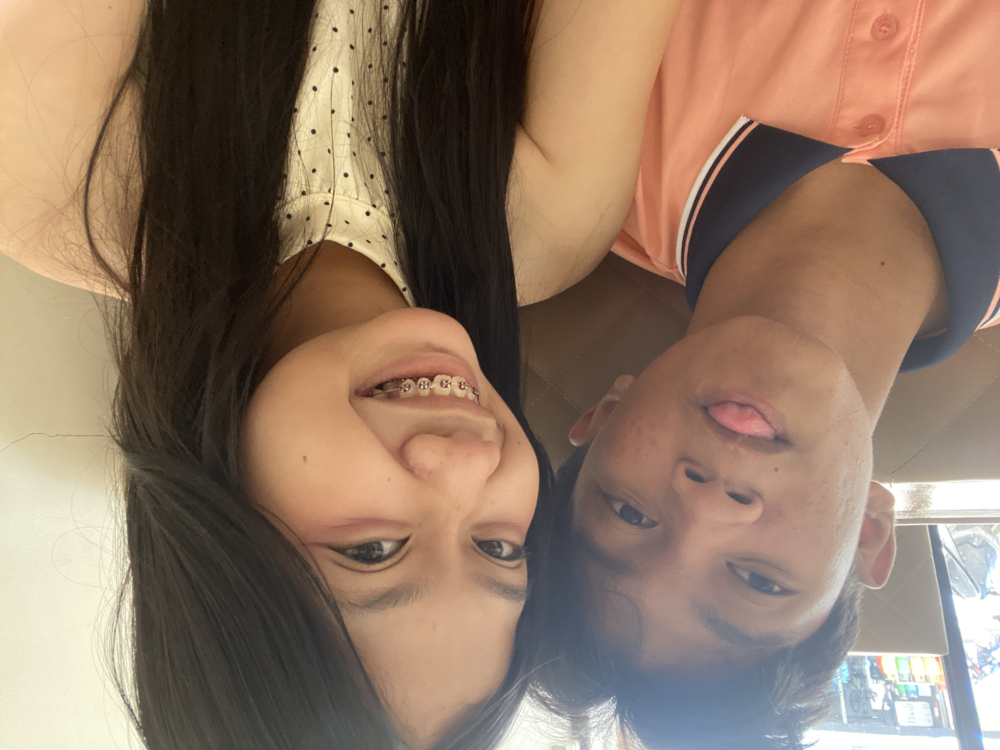
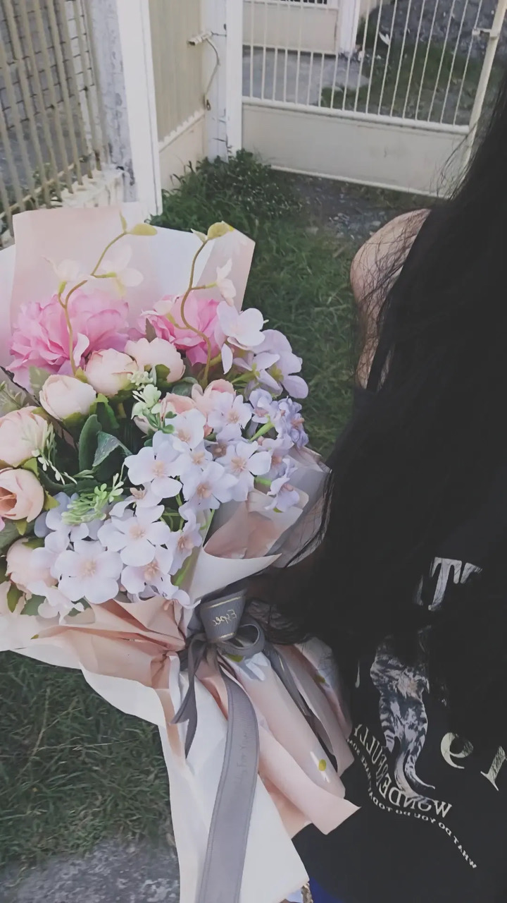

As the months goes by, i hope your love for me won't change
Babb, please look and i hope you feel it ♡






Sana maraming memories pa tayong mabuo
Mahal ko? ♡
Can you be honest with me? am I treating you right? Nag e-enjoy ka pa rin ba sa akin? sa atin? Minamahal ba kita ng tama? Tama ba ako mag mahal? Natutunan ko na bang mahalin ka kung paano mo gusto mahalin? Babb, please, kung hindi mag sabi ka lang please.
Babb, please, can i ask you a huge favor? wag ikaw bumitaw, sa akin, sa atin, please? Kapag napapagod, mag sabi, please? para magkaroon naman ako ng pagkakataon mag bago para indi ka mapagod.
Kung alam mo lang bab kung paano ako matakot pag iniisip ko na nasasaktan kita. Maraming beses kong tinatanong yung sarili ko, bakit kaya siya nag kakaganyan? Siguro nawawalan na siya ng nararamdaman sa akin. Yun, yun lagi ang iniisip ko. Bab, sa tuwing nag-aaway tayo, kung hindi po halata na sobrang sakit po para sa akin, sa bawat away natin, naiiyak ako lagi, kasi unti unti kong nakikitang nag lalaho yung mga plano kong nakalaan sa bawat araw na nag aaway tayo.
Alam ko naman po na walang araw na laging masaya, wala pong ganon, may sisingit at sisingit pa rin lagi na prolema, but babb, ayoko na ng pag nagpaplano ako, ang unang iniisip ko, baka mag away kami sa araw na iyon. Bebe natatakot akong baka bumitaw ka sa araw na marami akong hinanda para sa'yo. Wag mo akong iwan, please? Please po, Wag. Sure marami akong pagkakamali sa'yo, but please, wag po.
Babb, i miss the time na takot na takot ka pang masaktan ako, yung na h-handle mo pa yung ugali ko, yung time na ayaw mong hayaan maiwan ako, yung mga oras na masaya lang. Am i too much na babb for you? Am i too boring na? I'm very grateful babb that your here, with me, but ayaw kong maramdaman natin na wala na tayong paki sa isa't isa dahil lang sa gaan ng panahon sa ating dalawa.
Wag mo ako sukuan, please? Nakikita mo ba po yung mga picture sa taas? Kaya pa nating gumawa ng maraming memories na kayang lampasan yan babb, wag ka lang bumitaw, please, kayang kaya ko ibigay yung mga kailangan mo, mag sabi ka lang.
Ayaw kong nasasaktan ka and sana ganon ka rin sa akin, kasi kung isa sa atin, kayang hayaan yung isa, talagang mahihirapan tayo dalawa. Ayokong mahirapan tayo dalawa, walang madali na relasyon, i get it, but let's make it easier po, please? Pangako bebe, mamahalin kita habang buhay, hindi ka na mag iisa, nandito na po ako ngayon, lagi po tandaan ha. Sa mga ups and downs natin dalawa, hinding hindi ako mawawala, pangako.
Babb, maraming maraming salamat sa mga oras na indi mo ako iniwan, sa mga oras na pinagbigyan mo ako sa mga gusto ko, sa mga oras na indi ka sumuko kahit sakal na sakal ka na sa ugali ko. Wag po susuko ha, mahal na mahal ko ikaw at gusto kong abangan mo pa yung pagmamahal ko na alam kong hihigit pa sa pagmamahal ko sa iyo ngayon. I love you mahal ko.
↕ Scroll inside the letter to read everything ↕